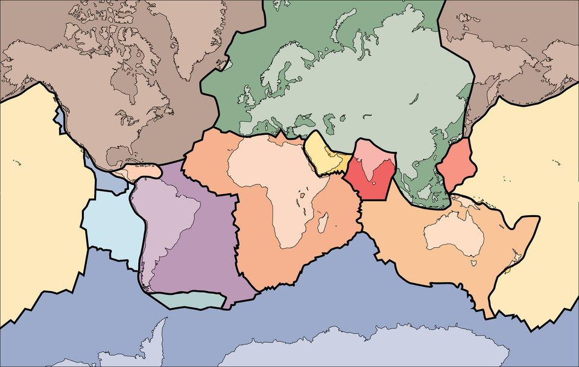
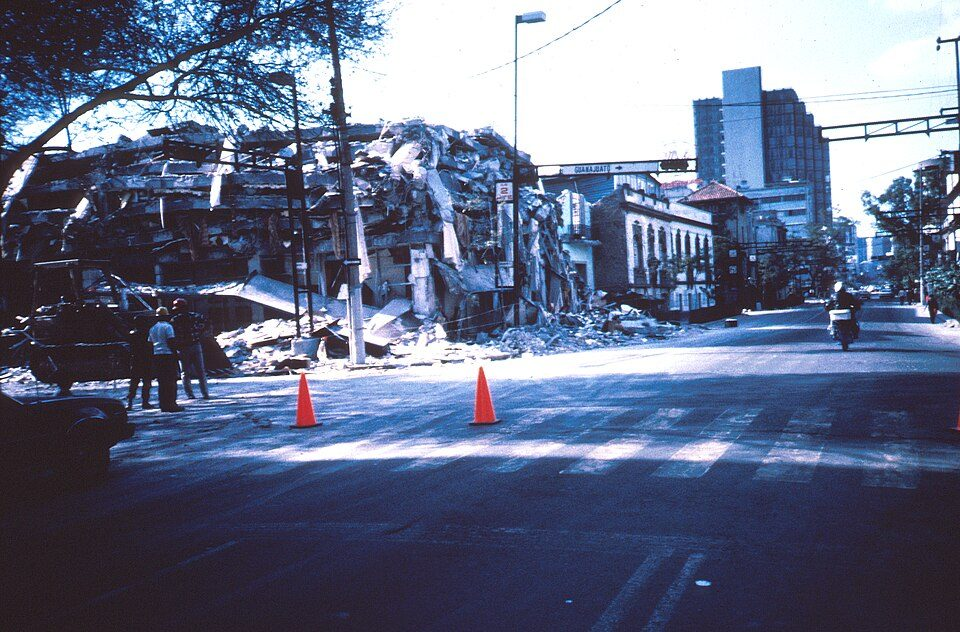

Planeta Tierra · 6 fichas
La Tierra por dentro
Capas del planeta, placas tectónicas, volcanes, terremotos, rocas y minerales, y los 4.540 millones de años de historia que guardan.
Bajo nuestros pies hay un planeta vivo: un núcleo tan caliente como la superficie del Sol, un manto que fluye muy despacio y una corteza rota en placas que se mueven, chocan y se separan. De ese movimiento nacen las montañas, los volcanes y los terremotos.
 Las capas de la TierraCorteza, manto y núcleo: un viaje de 6.371 km hasta el centro del planeta, donde hace tanto calor como en la superficie del Sol.
Las capas de la TierraCorteza, manto y núcleo: un viaje de 6.371 km hasta el centro del planeta, donde hace tanto calor como en la superficie del Sol.
Tectónica de placasLa superficie de la Tierra es un puzle de placas que se mueven unos centímetros al año. Así se abren océanos y se levantan cordilleras.- VolcanesVentanas al interior de la Tierra: cómo funcionan, las grandes erupciones de la historia y los volcanes de España, del Teide a La Palma y Olot.

Terremotos y tsunamisPor qué tiembla la Tierra, cómo se miden los terremotos, los más destructivos de la historia y los que han sacudido España. Rocas y mineralesLos ladrillos de la Tierra: cómo se forman las rocas, qué son los minerales y dónde están los cristales más asombrosos, de Naica a la geoda de Pulpí.
Rocas y mineralesLos ladrillos de la Tierra: cómo se forman las rocas, qué son los minerales y dónde están los cristales más asombrosos, de Naica a la geoda de Pulpí. La historia de la TierraDe una bola de roca fundida a un planeta azul lleno de vida: los 4.540 millones de años de la Tierra, contados en eras.
La historia de la TierraDe una bola de roca fundida a un planeta azul lleno de vida: los 4.540 millones de años de la Tierra, contados en eras.